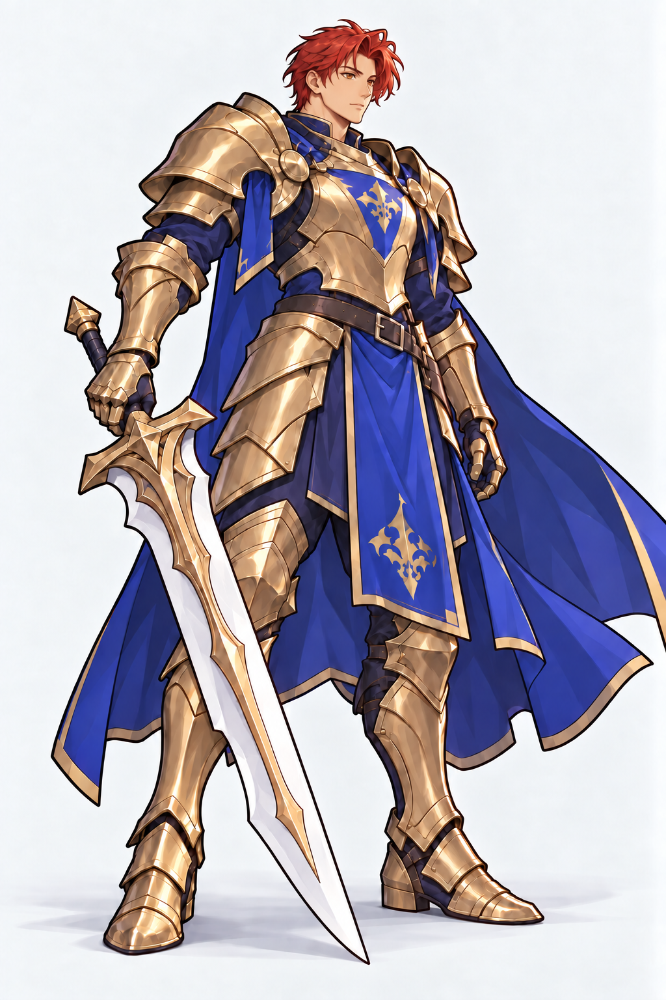

<!doctype html><html lang="zh-CN"><meta charset="utf-8"><meta name="viewport" content="width=device-width,initial-scale=1"><title>骑士 · 面部修订</title><style>body{margin:0;background:#e8e5df;color:#282622;font:15px/1.5 -apple-system,BlinkMacSystemFont,sans-serif}main{max-width:1150px;margin:auto;padding:20px 24px}h1{font-size:23px;margin:0 0 12px}.pair{display:grid;grid-template-columns:1fr 1fr;gap:18px}figure{margin:0;background:#f8f7f4;border:1px solid #c9c4bb;border-radius:8px;overflow:hidden}figcaption{padding:8px 12px}.crop{aspect-ratio:1;position:relative;overflow:hidden}.crop img{position:absolute;width:365.7143%;max-width:none;height:auto;left:-142.8571%;top:-3.5714%}a{color:#374c7d}.links{padding:8px 12px}p{margin:10px 0}@media(max-width:600px){main{padding:12px}.pair{gap:8px}}</style><main><h1>骑士 · 面部修订</h1><div class="pair"><figure><figcaption>修订前</figcaption><div class="crop"></div><div class="links"><a href="knight-after.png">查看完整立绘</a></div></figure><figure><figcaption>偏东亚动漫面部</figcaption><div class="crop"></div><div class="links"><a href="knight-face-east-asian.png">查看完整立绘</a></div></figure></div><p><a href="knight-face-east-asian-prompt.txt">完整提示词</a></p></main></html>